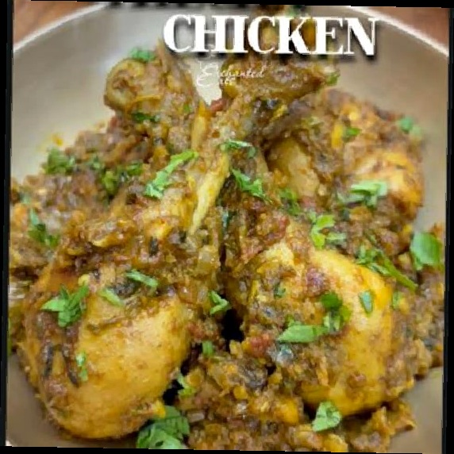
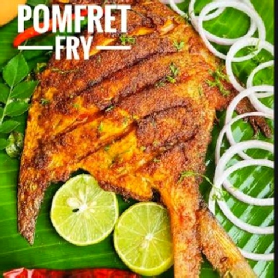
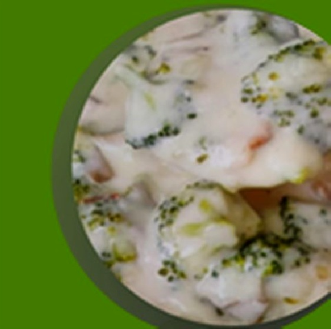
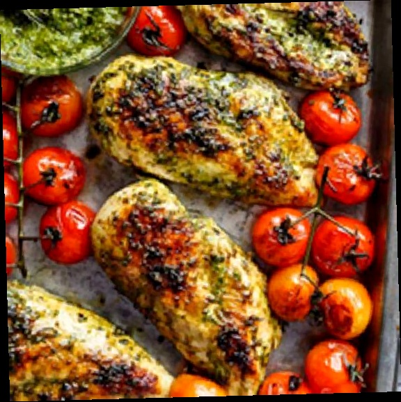
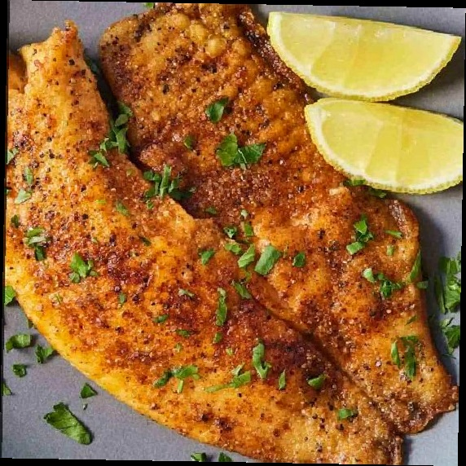

03 · Interactive concept demo
ERA
Snacks



Feel ready.
The idea
Healthy food without the clinical personality.
ERA turns a familiar meal-subscription flow into something lively and consumer-led. Bold typography, food-first imagery and an expressive warm palette keep the product practical without making it sterile.
The demo includes menu filtering, weekly switching, a five-meal box builder and responsive macro calculations.
05Meal box builder
03Responsive breakpoints
01Coherent consumer story


Explore the interactive demo
Launch ERA Snacks ↗Next: Deckler →